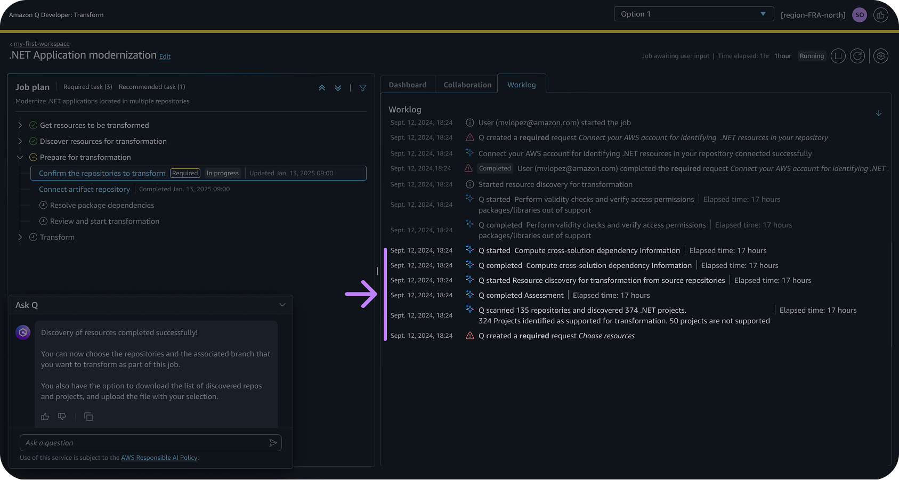
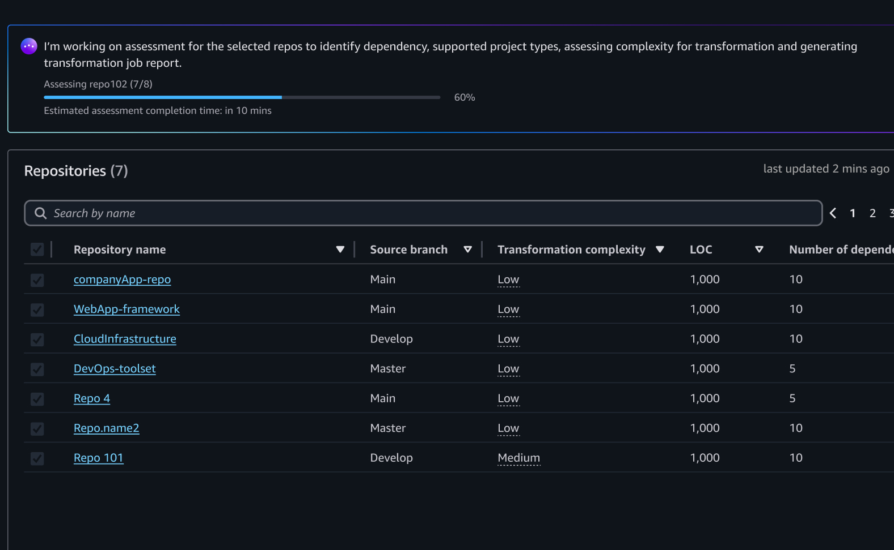

Agentic AI · Code Analysis
Improving code assessment for .NET modernization

An AI-powered assessment capability analysing complexity, compatibility and dependencies, so customers can plan a .NET modernization with evidence instead of guesswork.
Final result
Dependency maps and intelligent grouping make the relationships between repositories legible enough to plan against, with results queryable in natural language and filterable in the UI.

Customers want comprehensive assessments to make confident transformation plans — and the old experience did not give them nearly enough to go on.
Assessment ran hidden inside a worklog, so customers could not tell what was happening. Plans were recommended from thin metadata like last-modified date, leaving real complexity and dependencies invisible. Anything richer meant weeks of manual spreadsheet work.

Three principles
Transparency — show progress and status in real time. Accessibility — make results queryable in natural language and filterable in the UI. Control — let people act on a portfolio at once rather than one repository at a time.

Outcome
Since launching in August 2025, customers including Thomson Reuters have called out the comprehensiveness of the assessment and the actionable insight it gives their planning.